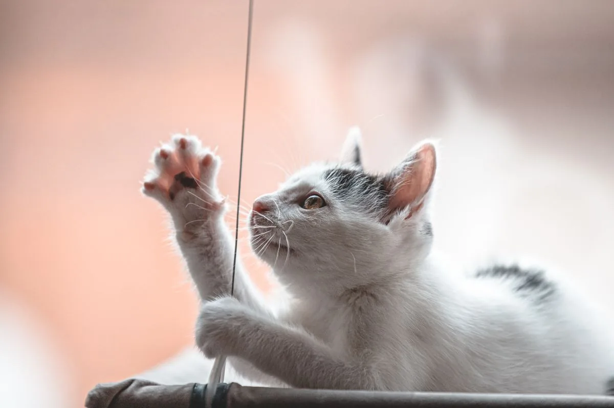

Chơi đùa và vận động cho chó mèo sống trong nhà
Tác giả: Ruler
Một chú chó nằm dài cả ngày trên ghế, một chú mèo ngủ gần hết buổi chiều trên bệ cửa sổ — hình ảnh đó quen thuộc tới mức nhiều người mới nuôi nghĩ rằng chó mèo sống trong nhà không cần vận động nhiều. Thực ra, chó và mèo vẫn cần được chơi đùa, vận động và dùng trí óc mỗi ngày, dù chúng sống trong căn hộ nhỏ hay nhà phố không có sân vườn. Nếu thiếu những hoạt động này, thú cưng có thể trở nên buồn chán, tăng cân, phá đồ đạc, kêu nhiều vào ban đêm, hoặc trở nên lo lắng khi chủ vắng nhà.
Bài viết này hướng dẫn cách chơi đùa và vận động cho chó mèo sống trong nhà, dựa trên những gợi ý làm giàu môi trường của Hiệp hội Phòng chống Ngược đãi Động vật Hoa Kỳ (ASPCA) và hướng dẫn chung về chăm sóc thú cưng của Hiệp hội Thú y Hoa Kỳ (AVMA). Bài viết chỉ mang tính tham khảo chung, không thay thế tư vấn của bác sĩ thú y. Nhu cầu vận động của mỗi con khác nhau theo tuổi, giống, cân nặng, tình trạng sức khỏe và tính cách, vì vậy bạn nên hỏi bác sĩ thú y về mức vận động phù hợp với thú cưng của mình trước khi bắt đầu một thói quen mới, đặc biệt là với thú cưng già, thú cưng thừa cân, thú cưng vừa ốm dậy hoặc thú cưng đang mang thai.
Vì sao chơi đùa trong nhà vẫn quan trọng
ASPCA cho biết một trong những chìa khóa để thú cưng vui vẻ và khỏe mạnh là làm giàu môi trường thường xuyên — tức là giữ cho môi trường sống của chúng an toàn và thú vị, đồng thời cho phép chúng thực hiện những hành vi tự nhiên của mình, chẳng hạn như đánh hơi hoặc gặm nhấm ở chó. Khi thú cưng phải ở trong nhà trong thời gian dài, việc thiếu hoạt động có thể dẫn tới buồn chán, và buồn chán có thể dẫn tới những hành vi phá hoại hoặc không mong muốn ở một số thú cưng.
Chơi đùa không chỉ là vận động cơ thể. ASPCA phân biệt rõ hai loại vận động: vận động thể chất và vận động trí óc. Một chú chó có thể chạy nhảy nhiều nhưng vẫn buồn chán nếu ngày nào cũng lặp lại đúng một trò chơi, ở đúng một chỗ, với đúng một món đồ chơi. Ngược lại, một trò chơi khiến thú cưng phải suy nghĩ — tìm đồ ăn giấu kín, học một lệnh mới, khám phá một món đồ lạ — có thể khiến nó mệt một cách dễ chịu dù cơ thể không vận động quá nhiều. Bài viết này vì vậy sẽ nói tới cả hai loại: trò chơi vận động và trò chơi trí óc, cho cả chó và mèo.
Một điểm nữa cần nói rõ: chơi đùa trong nhà không thay thế hoàn toàn việc ra ngoài. Chó vẫn cần được dắt đi dạo để đi vệ sinh, hít thở không khí ngoài trời và gặp gỡ môi trường bên ngoài, theo lịch trình mà chủ nuôi và bác sĩ thú y đã thống nhất. Mèo sống trong nhà hoàn toàn vẫn cần có chỗ leo trèo, chỗ quan sát và đồ chơi phù hợp trong nhà. Bài viết này tập trung vào những gì bạn có thể làm trong nhà, để bổ sung cho những lần ra ngoài, chứ không thay thế chúng.
Bạn cũng nên nhớ rằng mỗi chú chó, chú mèo có tính cách riêng. Có con thích đuổi theo đồ chơi, có con thích gặm nhấm yên lặng, có con thích leo cao quan sát, có con chỉ thích nằm cạnh chủ và được vuốt ve. Bạn không cần ép thú cưng chơi theo cách mà bạn nghĩ là đúng. Bạn chỉ cần quan sát xem nó thích trò nào, chơi được bao lâu thì mệt, và trò nào khiến nó tỏ ra lo lắng hay sợ hãi để tránh lặp lại.
Nguyên tắc an toàn khi chơi trong nhà
Trước khi bắt đầu, bạn nên rà soát lại không gian chơi. Bạn hãy dọn những vật nhỏ mà thú cưng có thể nuốt, chẳng hạn như dây chun, kẹp tóc, pin, đồng xu hay đồ chơi nhỏ của trẻ em, ra khỏi khu vực chơi. Bạn nên kiểm tra đồ chơi của thú cưng thường xuyên: nếu đồ chơi đã rách, đứt chỉ, vỡ thành mảnh nhỏ, bạn nên bỏ đi thay vì để thú cưng tiếp tục gặm. Bạn cũng nên tránh những trò chơi khiến thú cưng phải nhảy từ trên cao xuống sàn cứng, chạy trượt trên sàn trơn, hoặc chen chúc trong không gian chật hẹp, vì những trò đó dễ gây chấn thương.
Bạn nên chơi với thú cưng khi nó đang tỉnh táo và thoải mái, không phải lúc nó đang ngủ say, đang ăn, hay đang tỏ ra sợ hãi. Bạn nên để thú cưng tự quyết định khi nào dừng chơi. Nếu nó quay mặt đi, nằm xuống, bỏ đi chỗ khác, hoặc tỏ ra mệt, bạn nên dừng lại. Bạn không nên giữ chặt thú cưng để ép nó chơi tiếp, và không nên dùng tay chân của mình làm đồ chơi để nó cắn, vì điều đó dạy nó rằng cắn tay người là trò chơi được phép.
Với nhà có trẻ nhỏ, bạn nên giám sát khi trẻ chơi với thú cưng, và dạy trẻ chơi nhẹ nhàng, không kéo đuôi, không bế thú cưng lên cao rồi thả xuống, không la hét vào mặt thú cưng. Với nhà có nhiều thú cưng, bạn nên cho mỗi con có đồ chơi và không gian riêng khi cần, để tránh tranh giành dẫn tới cắn nhau.
Cuối cùng, bạn nên nhớ rằng đồ ăn dùng trong trò chơi vẫn là đồ ăn, và cần tính vào khẩu phần hằng ngày. Bánh thưởng và đồ ăn vặt cho chó mèo: cho bao nhiêu là đủ của website này đã nói kỹ về quy tắc bánh thưởng, nhưng ở đây bạn chỉ cần nhớ nguyên tắc chung: bánh thưởng và đồ ăn vặt không nên chiếm quá 10% lượng calo hằng ngày của thú cưng, phần lớn calo nên đến từ thức ăn đầy đủ và cân bằng. Nếu bạn dùng nhiều đồ ăn trong trò chơi, bạn nên giảm bớt lượng thức ăn trong bữa chính tương ứng, và hỏi bác sĩ thú y nếu bạn không chắc về lượng phù hợp.
Chơi với chó trong nhà
ASPCA gợi ý nhiều cách để chó vận động trí óc ngay trong nhà mà không tốn nhiều tiền. Dưới đây là những gợi ý chính, được viết lại bằng lời của bài viết này, kèm theo cách áp dụng trong nhà phố hoặc căn hộ nhỏ ở Việt Nam.
Thứ nhất, bạn có thể dùng thảm đánh hơi hoặc đồ chơi xếp hình để cho chó ăn. Thay vì đổ thức ăn vào bát như thường lệ, bạn rải một phần bữa ăn lên thảm đánh hơi, hoặc nhồi thức ăn vào đồ chơi xếp hình. ASPCA gợi ý bạn có thể nhồi đồ chơi xếp hình bằng thức ăn ngon như sữa chua trắng, bơ đậu phộng hoặc chính bữa ăn của chó, để tạo ra một thử thách vừa ngon vừa thú vị, giúp chó bận rộn và được kích thích tinh thần. Khi chó đã quen với đồ chơi xếp hình, bạn có thể thử làm đông đồ chơi đã nhồi thức ăn, để chó mất nhiều thời gian hơn mới lấy hết thức ăn ra. Nếu bạn chưa có đồ chơi xếp hình, ASPCA cho biết bạn có thể dùng hộp các-tông với nhiều kích cỡ khác nhau, cuộn giấy, ống nhựa có đục lỗ ở hai bên, hoặc bình nhựa để thay thế.
Bạn cần lưu ý về bơ đậu phộng: bạn chỉ nên dùng loại bơ đậu phộng không chứa xylitol, và chỉ dùng một lượng nhỏ, tính vào khẩu phần hằng ngày. Thức ăn của người gây độc cho chó mèo của website này đã nói rõ xylitol nguy hiểm với chó, và một số loại bơ đậu phộng có chứa chất tạo ngọt này. Nếu bạn không chắc loại bơ đậu phộng nhà mình có chứa xylitol hay không, bạn nên bỏ qua nguyên liệu này và chỉ dùng thức ăn thường của chó hoặc sữa chua trắng không đường.
Thứ hai, bạn có thể tổ chức trò săn tìm đồ ăn trong nhà. ASPCA gợi ý bạn giấu đồ ăn quanh phòng ở những chỗ chó có thể nhìn thấy một phần, hoặc giấu trong hộp các-tông, cuộn giấy vệ sinh rỗng, hộp ngũ cốc, hoặc hộp đựng trứng, để chó dùng mũi tìm ra. Nếu nhà bạn có sân, bạn có thể rải thức ăn khô của chó lên cỏ để nó tìm bữa ăn của mình. Trong căn hộ nhỏ, bạn có thể bắt đầu đơn giản: giấu vài hạt thức ăn dưới một chiếc khăn, trong một chiếc hộp mở, hoặc sau chân ghế, rồi để chó tự tìm. Khi chó đã quen, bạn có thể tăng độ khó dần lên bằng cách giấu ở chỗ cao hơn, xa hơn, hoặc trong nhiều lớp hộp lồng nhau.
Thứ ba, bạn có thể tập cho chó những bài tập ngắn, mang tính khích lệ. ASPCA gợi ý bạn cho chó tập những bài như chạm vào tay bạn hoặc chạm vào một vật cụ thể, hoặc học các lệnh "ngồi", "nằm" và "đến". Nếu chó của bạn đã biết những lệnh cơ bản, bạn có thể tìm sách hoặc video hướng dẫn những kỹ năng nâng cao hơn, chẳng hạn như "xoay vòng" hoặc "lăn tròn". Nếu bạn muốn được hướng dẫn, nhiều huấn luyện viên chó chuyên nghiệp có lớp học trực tuyến. Bạn nên tập trong những buổi ngắn, chỉ vài phút mỗi lần, và kết thúc khi chó vẫn còn hứng thú, thay vì tập tới khi nó mệt và chán.
Ngoài ba gợi ý trên, bạn có thể tận dụng những hoạt động hằng ngày làm trò chơi. Ví dụ, bạn có thể để chó chờ vài giây trước khi ăn, rồi mới cho phép nó ăn khi bạn ra hiệu. Bạn có thể giấu đồ chơi yêu thích của nó và để nó tìm. Bạn có thể đổi vị trí đồ chơi, đổi loại đồ chơi theo ngày, để mỗi ngày có một điều mới. Bạn không cần mua nhiều đồ chơi đắt tiền. Một chiếc hộp các-tông, một chiếc khăn cũ, một quả bóng mềm, và một ít thời gian của bạn cũng đủ để tạo ra một buổi chơi thú vị.
Bạn cũng nên chú ý tới dấu hiệu mệt mỏi của chó. Nếu chó thở hổn hển nhiều, lè lưỡi dài, bước đi chậm lại, hoặc nằm xuống giữa chừng, bạn nên cho nó nghỉ ngơi và uống nước. Bạn không nên ép chó chơi tiếp khi nó đã mệt, đặc biệt là trong thời tiết nóng, hoặc với chó mặt ngắn, chó già, chó thừa cân. Nếu chó của bạn ho, khó thở, hoặc tỏ ra đau khi vận động, bạn nên dừng chơi và đưa nó đi khám bác sĩ thú y.
Chơi với mèo trong nhà
Mèo sống trong nhà hoàn toàn có nhu cầu vận động và khám phá không kém gì chó, chỉ là cách chơi của mèo khác với chó. Mèo thích rình mồi, vồ, leo cao, chui vào chỗ hẹp và quan sát từ trên cao. Nếu nhà bạn không có gì để mèo leo trèo hay khám phá, mèo có thể trở nên buồn chán, ít vận động, tăng cân, hoặc phá đồ đạc vào ban đêm.
ASPCA gợi ý những cách sau để mèo vận động trí óc trong nhà:
- Bạn có thể cho mèo ăn trong đồ chơi xếp hình dành cho mèo, thay vì đổ thức ăn vào bát như thường lệ. Việc này khiến mèo phải dùng chân và mũi để lấy thức ăn ra, giống như cách mèo hoang phải tìm mồi.
- Bạn có thể cho mèo những vật để khám phá, chẳng hạn như hộp các-tông, túi giấy (bạn nhớ cắt quai túi đi để mèo không bị mắc cổ), nắp chai, giấy gói, và đồ chơi khuyến khích mèo dùng chân để khám phá các lỗ hổng.
- Bạn có thể dạy mèo học những hành vi hữu ích và những trò vui như "ngồi", "đến", chạm tay, "bắt tay" và lấy đồ. Việc dạy mèo không cần phải phức tạp: bạn chỉ cần một ít bánh thưởng nhỏ, một buổi tập ngắn, và sự kiên nhẫn.
- Bạn có thể đặt máng ăn cho chim và sóc ở ngoài cửa sổ, nơi mèo có thể quan sát chim chóc đến và đi trong ngày, hoặc thử cho mèo xem video về chim và sóc trên tivi, máy tính hoặc điện thoại.
Ngoài những gợi ý trên, bạn nên chuẩn bị cho mèo những chỗ leo trèo và ẩn nấp trong nhà. Một chiếc kệ gắn tường, một cây cào móng có nhiều tầng, một chiếc hộp các-tông đặt ở góc phòng, hay một chiếc giường mèo đặt trên cao gần cửa sổ đều có thể trở thành nơi yêu thích của mèo. Mèo thích quan sát từ trên cao, vì ở đó nó cảm thấy an toàn và có thể nhìn bao quát cả căn phòng. Bạn nên đặt một chỗ nằm của mèo gần cửa sổ có ánh sáng tự nhiên, để mèo có thể nhìn ra ngoài và sưởi nắng vào buổi sáng.
Khi chơi với mèo, bạn nên dùng đồ chơi có dây hoặc que dài, để tay của bạn ở xa miệng và móng của mèo. Bạn nên di chuyển đồ chơi giống như con mồi đang chạy trốn: lúc nhanh, lúc chậm, lúc ẩn sau góc tường, lúc nhảy lên cao. Bạn không nên di chuyển đồ chơi liên tục không ngừng nghỉ, vì mèo cần có lúc rình mồi và chờ đợi. Bạn nên để mèo bắt được đồ chơi sau một lúc chơi, để nó cảm thấy thỏa mãn, thay vì lúc nào cũng để đồ chơi chạy thoát.
Bạn cũng nên chơi với mèo vào những thời điểm mèo tỉnh táo nhất — theo gợi ý thực hành của bài viết, thường là buổi sáng sớm và buổi tối. Bạn nên chơi trong những buổi ngắn, khoảng 10 đến 15 phút mỗi lần (cũng là gợi ý thực hành của bài viết), và kết thúc bằng một bữa ăn nhẹ hoặc một món ăn nhỏ, để mèo liên kết việc chơi đùa với một kết thúc dễ chịu. Nếu mèo của bạn cắn hoặc cào khi chơi, bạn nên dừng chơi ngay, rút tay lại nhẹ nhàng, và thử lại vào lúc khác với đồ chơi dài hơn. Bạn không nên phạt mèo bằng cách la hét hay đánh nó, vì điều đó chỉ khiến mèo sợ hãi và mất lòng tin.
Chuẩn bị cho thời gian ở một mình
Nhiều chủ nuôi đi làm cả ngày và lo lắng thú cưng ở nhà một mình sẽ buồn chán. ASPCA gợi ý bạn nên chuẩn bị cho thú cưng quen với thời gian ở một mình ngay cả khi bạn còn ở nhà, bằng cách dành thời gian để thú cưng ở một mình một cách thoải mái trong ngày.
Cụ thể, ASPCA gợi ý bạn tạo một chỗ ấm cúng, mời gọi để chó hoặc mèo ngủ trưa, tránh xa những hoạt động ồn ào trong nhà. Bạn có thể bật một bản nhạc nhẹ nhàng. Khi bạn cho thú cưng thời gian ở một mình, bạn có thể cho chó những món nhai ngon để nó bận rộn. Bạn có thể mua nhiều loại đồ nhai thú vị và dễ tiêu hóa, hoặc nhồi đồ chơi xếp hình bằng món ăn ngon rồi làm đông lại. Cả chó và mèo đều sẽ được giải trí trong một thời gian với đồ chơi xếp hình tương tác. Ngoài ra, có nhiều ứng dụng trò chơi miễn phí cho mèo chơi một mình, và bạn cũng có thể tìm mua đồ chơi chạy bằng pin để mèo chơi khi bạn vắng nhà. Bạn cũng nên thỉnh thoảng ra khỏi nhà đi dạo một lúc mà không mang theo chó, để tập cho nó quen với việc bạn vắng nhà trong thời gian ngắn. Trong lúc bạn ra ngoài, bạn để lại cho chó một món nhai hoặc bữa ăn trong đồ chơi xếp hình để nó bận rộn.
Bạn nên tập việc ở một mình một cách từ từ. Bạn bắt đầu bằng việc rời khỏi phòng trong vài phút, rồi quay lại, và tăng dần thời gian vắng mặt. Bạn không nên làm ầm ĩ khi rời đi hay khi trở về, vì điều đó khiến thú cưng nghĩ rằng việc bạn đi vắng là một sự kiện lớn đáng lo lắng. Bạn chỉ cần rời đi nhẹ nhàng, và khi trở về, bạn chào thú cưng một cách bình tĩnh.
Nếu thú cưng của bạn sủa nhiều, phá đồ đạc, đi vệ sinh không đúng chỗ, hoặc tỏ ra lo lắng quá mức mỗi khi bạn vắng nhà, bạn nên hỏi bác sĩ thú y hoặc chuyên gia hành vi thú cưng để được tư vấn. Bài viết này không chẩn đoán chứng lo lắng khi xa chủ, chỉ ghi lại để bạn biết khi nào cần nhờ chuyên gia giúp đỡ.
Lịch chơi trong tuần: tự sắp xếp theo 5 nhóm làm giàu môi trường
ASPCA và các tài liệu về làm giàu môi trường thường chia hoạt động của thú cưng thành nhiều nhóm: vận động thể chất, vận động trí óc qua thức ăn, giao tiếp xã hội, kích thích giác quan, và trải nghiệm mới. Bài viết này tự đề xuất một lịch chơi trong tuần dựa trên 5 nhóm đó, để bạn không bị lặp lại đúng một trò chơi mỗi ngày. Lịch này chỉ là gợi ý, bạn có thể điều chỉnh theo thời gian rảnh và sở thích của thú cưng.
| Ngày | Nhóm chính | Gợi ý trong nhà |
|---|---|---|
| Thứ 2 | Vận động trí óc qua thức ăn | Cho ăn trong đồ chơi xếp hình hoặc thảm đánh hơi |
| Thứ 3 | Vận động thể chất | Chơi đuổi đồ chơi, tập lệnh "ngồi, nằm, đến" trong buổi ngắn |
| Thứ 4 | Kích thích giác quan | Đổi vị trí đồ chơi, cho mèo quan sát chim ngoài cửa sổ, cho chó ngửi mùi mới an toàn trong nhà |
| Thứ 5 | Giao tiếp xã hội | Chơi cùng chủ, chải lông nhẹ nhàng, tập chạm tay |
| Thứ 6 | Trải nghiệm mới | Hộp các-tông mới, túi giấy mới, đồ chơi mới hoặc đồ chơi cũ cất đi lâu ngày |
| Thứ 7 | Kết hợp | Buổi chơi dài hơn, săn tìm đồ ăn giấu trong nhà |
| Chủ nhật | Nghỉ ngơi chủ động | Chơi nhẹ, cho thú cưng ngủ nhiều hơn, kiểm tra đồ chơi đã hỏng hay chưa |
Bạn không cần làm đúng lịch này từng ngày. Điều quan trọng là có sự đa dạng: hôm nay cho ăn trong đồ chơi xếp hình, ngày mai tập lệnh mới, ngày kia đổi chỗ nằm của mèo, cuối tuần giấu đồ ăn trong nhà. Sự đa dạng giúp thú cưng không bị nhàm chán, và giúp bạn phát hiện ra trò nào nó thích nhất.
Bạn cũng nên ghi lại vào sổ theo dõi: hôm nay bạn chơi trò gì, thú cưng chơi được bao lâu, nó tỏ ra thích hay không thích trò đó, và có dấu hiệu mệt mỏi hay khó chịu nào không. Sau vài tuần, bạn sẽ thấy rõ thú cưng của mình thích trò nào nhất, và bạn có thể lặp lại những trò đó thường xuyên hơn.
Khi nào chơi đùa không đủ và cần gặp bác sĩ thú y
Chơi đùa giúp thú cưng vui vẻ và khỏe mạnh, nhưng nó không thay thế việc khám bác sĩ thú y. Bạn nên đưa thú cưng đi khám nếu thấy những dấu hiệu sau, dù bạn đã chơi với nó đều đặn:
- Thú cưng bỗng trở nên ít vận động hẳn, nằm một chỗ cả ngày, không còn hứng thú với đồ chơi mà trước đây nó rất thích.
- Thú cưng thở khó, ho nhiều, hoặc tỏ ra đau khi vận động.
- Thú cưng tăng cân nhanh dù bạn đã kiểm soát lượng thức ăn, hoặc sụt cân nhanh không rõ nguyên nhân.
- Thú cưng có vết thương, đi khập khiễng, hoặc không chịu đặt chân xuống đất sau khi chơi.
- Thú cưng thay đổi hành vi đột ngột: trở nên hung dữ, sợ hãi, hoặc trốn tránh nhiều hơn bình thường.
Những dấu hiệu này có thể liên quan tới nhiều vấn đề sức khỏe khác nhau, và bài viết này không chẩn đoán nguyên nhân. Bạn nên đưa thú cưng đi khám bác sĩ thú y để được kiểm tra trực tiếp.
Bạn cũng nên hỏi bác sĩ thú y về mức vận động phù hợp nếu thú cưng của bạn thuộc một trong những nhóm sau: thú cưng già, thú cưng thừa cân, thú cưng vừa phẫu thuật, thú cưng có bệnh tim, bệnh khớp, bệnh hô hấp, hoặc thú cưng đang mang thai. Với những thú cưng này, việc vận động quá sức có thể gây hại, và bác sĩ thú y là người quyết định mức vận động an toàn.
Kết luận
Chơi đùa và vận động cho chó mèo sống trong nhà không cần phải phức tạp hay tốn kém. Bạn chỉ cần nhớ ba việc chính: cho thú cưng vận động cả cơ thể và trí óc, thay đổi trò chơi thường xuyên để nó không bị nhàm chán, và quan sát phản ứng của nó để dừng lại khi nó mệt hoặc sợ hãi. ASPCA đã gợi ý những cách đơn giản như dùng thảm đánh hơi, đồ chơi xếp hình, trò săn tìm đồ ăn, tập lệnh ngắn, và chuẩn bị chỗ ở một mình thoải mái. Bài viết này đã tổng hợp lại những gợi ý đó bằng lời của mình, kèm theo lịch chơi trong tuần theo 5 nhóm làm giàu môi trường để bạn dễ áp dụng.
Bạn không cần mua nhiều đồ chơi đắt tiền. Một chiếc hộp các-tông, một chiếc thảm đánh hơi tự làm, một quả bóng mềm, và một ít thời gian mỗi ngày của bạn cũng đủ để thú cưng có một ngày vui vẻ hơn. Điều quan trọng nhất là bạn dành thời gian chơi cùng thú cưng mỗi ngày, dù chỉ là vài phút, và để nó biết rằng bạn luôn ở đó. Nếu bạn làm được như vậy, việc chơi đùa sẽ không chỉ giúp thú cưng khỏe mạnh hơn, mà còn giúp bạn và thú cưng gắn bó với nhau hơn mỗi ngày.

Nguồn tham khảo
- Hiệp hội Phòng chống Ngược đãi Động vật Hoa Kỳ (ASPCA) — At-Home Tips for Keeping Your Pets Busy and Engaged. https://www.aspca.org/news/home-tips-keeping-your-pets-busy-and-engaged
- Hiệp hội Thú y Hoa Kỳ (AVMA) — Pet ownership guidelines. https://www.avma.org/resources-tools/avma-policies/pet-ownership-guidelines
- Hiệp hội Thú y Hoa Kỳ (AVMA) — Pet Dental Care (dùng để đối chiếu nguyên tắc chăm sóc chung: kiểm tra định kỳ và hỏi bác sĩ thú y khi có dấu hiệu bất thường). https://www.avma.org/resources-tools/pet-owners/petcare/pet-dental-care